Chapter 12 Plotting
"Make it informative, then make it pretty"
There are two major sets of tools for creating plots in R:
Note that other plotting facilities do exist (notably lattice), but base and ggplot2 are by far the most popular.
12.1 The Dataset
For the following examples, we will be using the gapminder dataset we have used previously. Gapminder is a country-year dataset with information on life expectancy, among other things.
library(gapminder)
gap <- gapminder12.2 R Base Graphics
The basic call takes the following form:
plot(x=, y=)We will also introduce a base R command to help us with creating these plots. To reference a specific column in a dataset, we use a $ with the following syntax: dataset$column. See this in action below, where we plot gdpPercap against lifeExp:
plot(x = gap$gdpPercap, y = gap$lifeExp)
12.2.1 Scatter and Line Plots
The type argument accepts the following character indicators:
"p": Point/scatter plots (default plotting behavior).
plot(x = gap$gdpPercap, y = gap$lifeExp, type="p")
"l": Line graphs.
# Note that "line" does not create a smooth line, just connected points
plot(x = gap$gdpPercap, y = gap$lifeExp, type="l") 
"b": Both line and point plots.
plot(x = gap$gdpPercap, y = gap$lifeExp, type="b")
12.2.2 Histograms and Density Plots
Histograms display the frequency of different values of a variable.
hist(x=gap$lifeExp)
Histograms require a breaks argument, which determines the number of bins in the plot. Let's play around with different breaks values:
hist(x=gap$lifeExp, breaks=5)
hist(x=gap$lifeExp, breaks=10)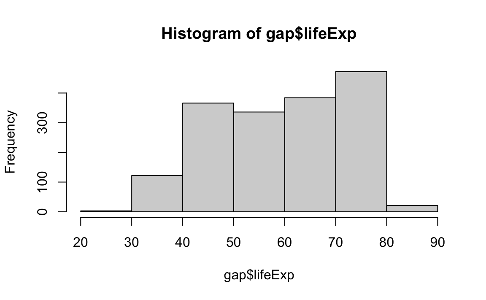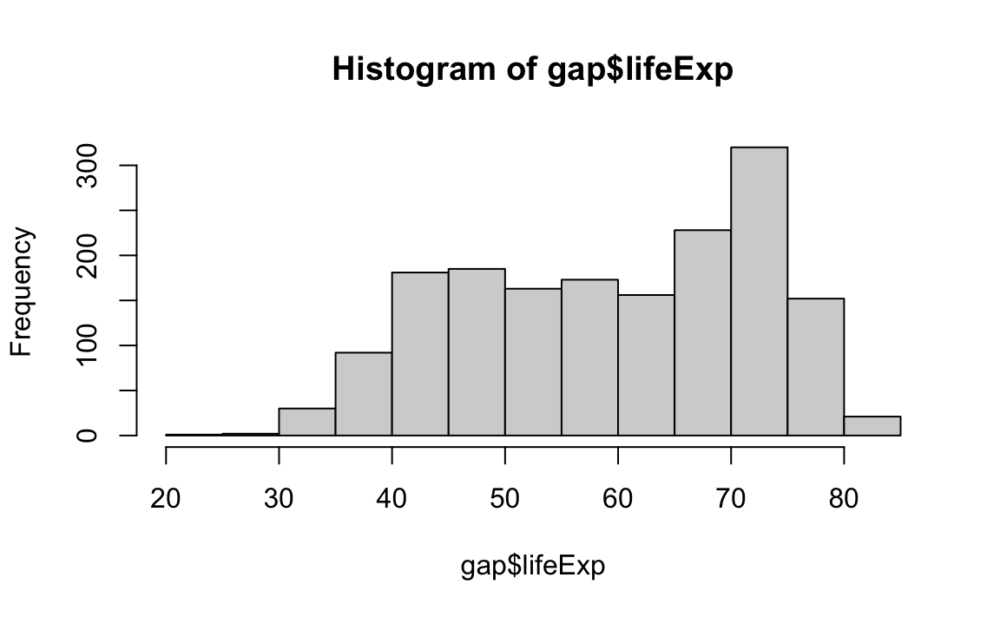
Density plots are similar; they visualize the distribution of data over a continuous interval.
# Create a density object (NOTE: Be sure to remove missing values)
age.density <- density(x=gap$lifeExp, na.rm=T)
# Plot the density object
plot(x=age.density)
Density passes a bw parameter, which determines the plot's "bandwidth."
# Plot the density object, bandwidth of 0.5
plot(x=density(x=gap$lifeExp, bw=.5))
# Plot the density object, bandwidth of 2
plot(x=density(x=gap$lifeExp, bw=2))
# Plot the density object, bandwidth of 6
plot(x=density(x=gap$lifeExp, bw=6)) 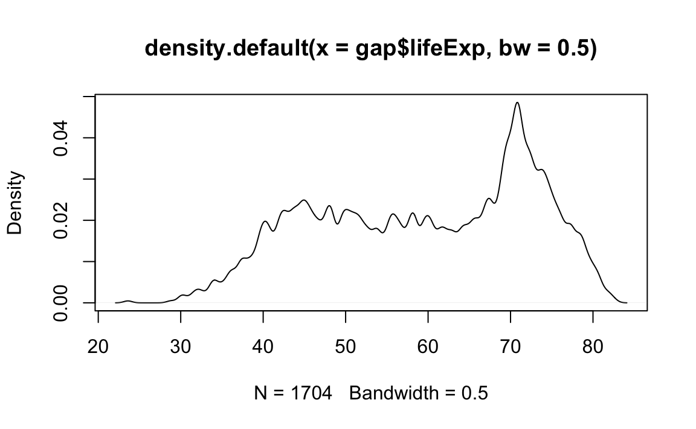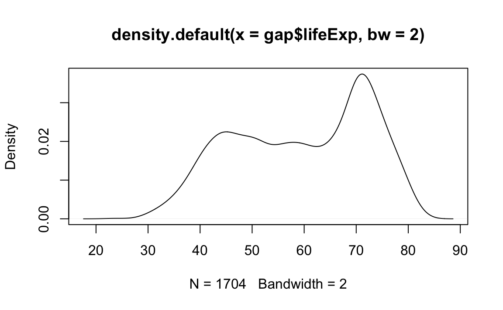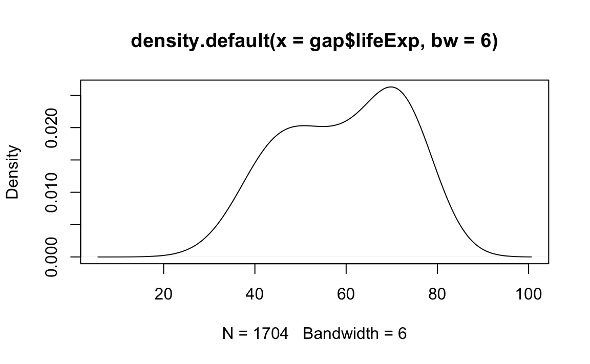
12.2.3 Labels
Here is the basic call with popular labeling arguments:
plot(x=, y=, type="", xlab="", ylab="", main="") From the previous example...
plot(x = gap$gdpPercap, y = gap$lifeExp, type="p", xlab="GDP per cap", ylab="Life Expectancy", main="Life Expectancy ~ GDP") # Add labels for axes and overall plot
12.2.4 Axis and Size Scaling
Currently it is hard to see the relationship between the points due to some strong outliers in GDP per capita. We can change the scale of units on the x-axis using scaling arguments.
Here is the basic call with popular scaling arguments:
plot(x=, y=, type="", xlim=, ylim=, cex=)From the previous example...
# Create a basic plot
plot(x = gap$gdpPercap, y = gap$lifeExp, type="p")
# Limit gdp (x-axis) to between 1,000 and 20,000
plot(x = gap$gdpPercap, y = gap$lifeExp, xlim = c(1000,20000))
# Limit gdp (x-axis) to between 1,000 and 20,000, increase point size to 2
plot(x = gap$gdpPercap, y = gap$lifeExp, xlim = c(1000,20000), cex=2)
# Limit gdp (x-axis) to between 1,000 and 20,000, decrease point size to 0.5
plot(x = gap$gdpPercap, y = gap$lifeExp, xlim = c(1000,20000), cex=0.5)  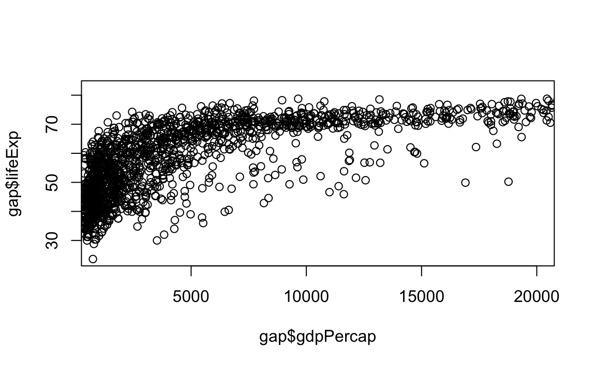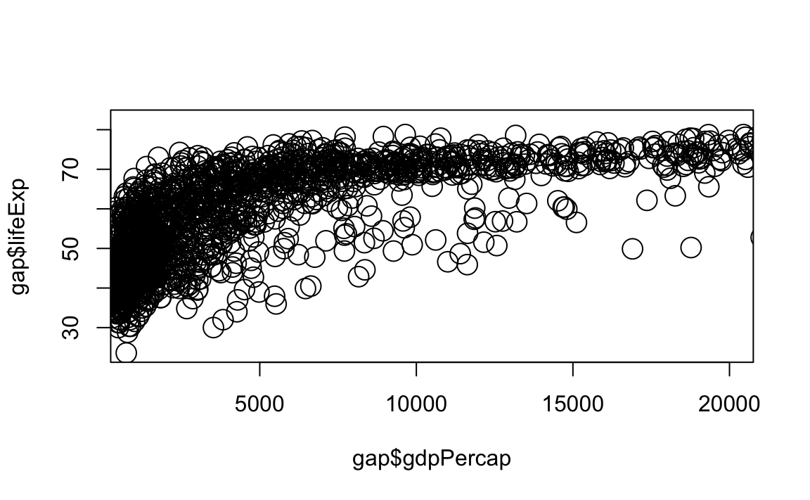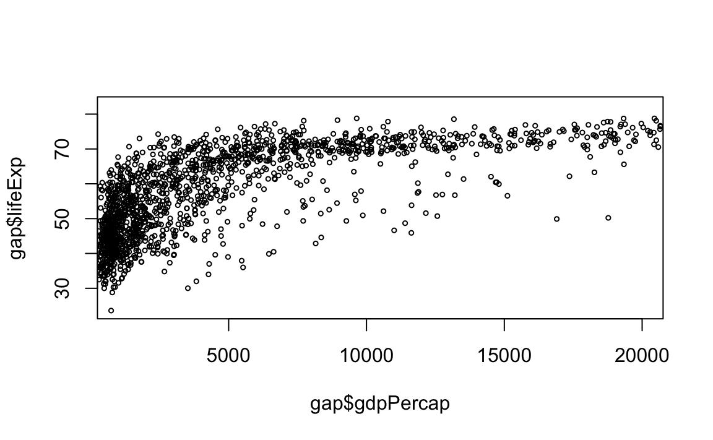
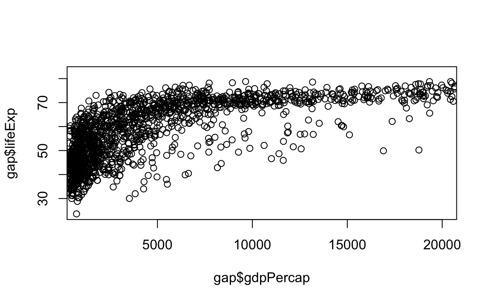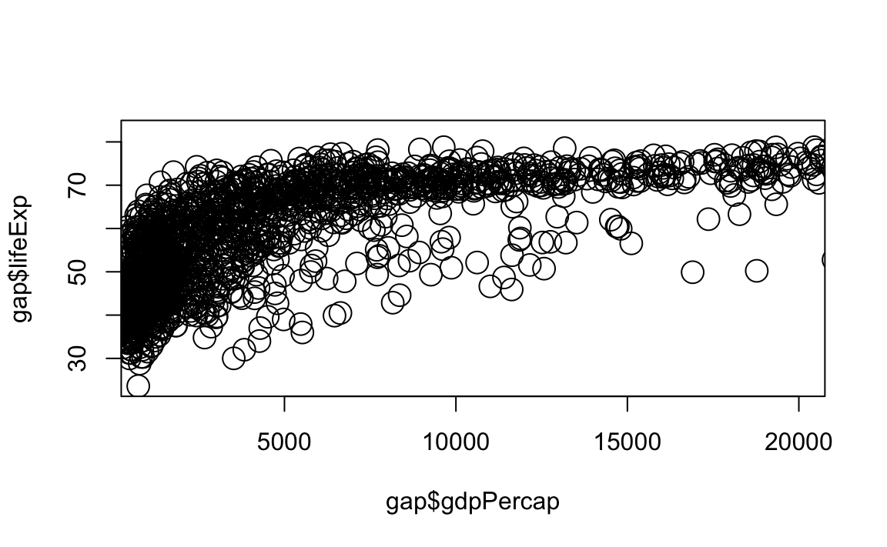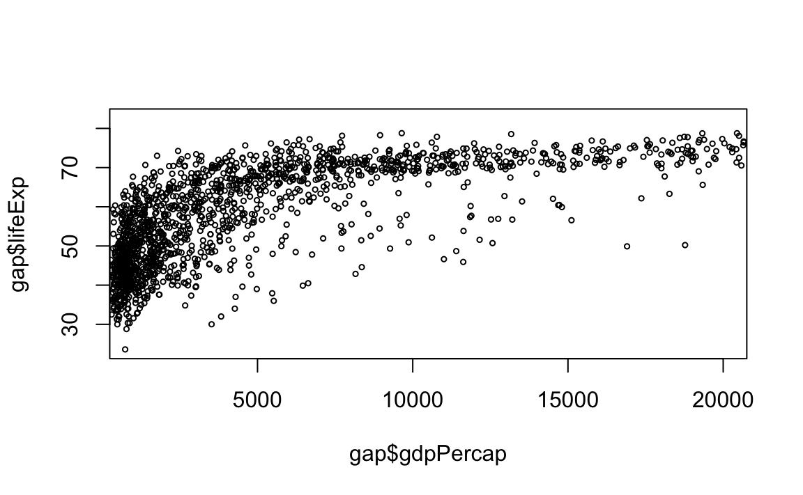
12.2.5 Graphical Parameters
We can change the points with a number of graphical options:
plot(x=, y=, type="", col="", pch=, lty=, lwd=)- Colors
library(dplyr)
colors() %>%
head(20)# View first 20 elements of the color vector
#> [1] "white" "aliceblue" "antiquewhite" "antiquewhite1"
#> [5] "antiquewhite2" "antiquewhite3" "antiquewhite4" "aquamarine"
#> [9] "aquamarine1" "aquamarine2" "aquamarine3" "aquamarine4"
#> [13] "azure" "azure1" "azure2" "azure3"
#> [17] "azure4" "beige" "bisque" "bisque1"Another option: R Color Infographic
{kind=link}
plot(x = gap$gdpPercap, y = gap$lifeExp, type="p", col="aquamarine1")
- Point Styles and Widths
{kind=link}
# Change point style to crosses
plot(x = gap$gdpPercap, y = gap$lifeExp, type="p", pch=3)
# Change point style to filled squares
plot(x = gap$gdpPercap, y = gap$lifeExp, type="p", pch=15)
# Change point style to filled squares and increase point size to 3
plot(x = gap$gdpPercap, y = gap$lifeExp, type="p", pch=15, cex=3)
# Change point style to "w"
plot(x = gap$gdpPercap, y = gap$lifeExp, type="p", pch="w")
# Change point style to "$" and increase point size to 2
plot(x = gap$gdpPercap, y = gap$lifeExp, type="p", pch="$", cex=2)
- Line Styles and Widths
# Line plot with solid line
plot(x = gap$gdpPercap, y = gap$lifeExp, type="l", lty=1)
# Line plot with medium dashed line
plot(x = gap$gdpPercap, y = gap$lifeExp, type="l", lty=2)
# Line plot with short dashed line
plot(x = gap$gdpPercap, y = gap$lifeExp, type="l", lty=3)
# Change line width to 2
plot(x = gap$gdpPercap, y = gap$lifeExp, type="l", lty=3, lwd=2)
# Change line width to 5
plot(x = gap$gdpPercap, y = gap$lifeExp, type="l", lwd=5)
# Change line width to 10 and use dash-dot
plot(x = gap$gdpPercap, y = gap$lifeExp, type="l", lty=4, lwd=10)
12.2.6 Annotations, Reference Lines, and Legends
- Text
We can add text to an arbitrary point on the graph like this:
# Plot the line first
plot(x = gap$gdpPercap, y = gap$lifeExp, type="p")
# Now add the label
text(x=40000, y=50, labels="Evens Out", cex = .75)
We can also add labels for every point by passing in a vector of text:
# First randomly select rows for a smaller gapaset
small <- gap %>% sample_n(100)
# Plot the line first
plot(x = small$gdpPercap, y = small$lifeExp, type="p")
# Now add the label
text(x = small$gdpPercap, y = small$lifeExp, labels = small$country)
- Reference Lines
# Plot the line
plot(x = gap$gdpPercap, y = gap$lifeExp, type="p")
# Now the guides
abline(v=40000, h=75, lty=2)
library(tidyverse)
library(gapminder)
gap <- gapminder12.3 ggplot2
Why ggplot?
- More elegant and compact code than R base graphics.
- More aesthetically pleasing defaults than
lattice. - Very powerful for exploratory data analysis.
- Follows a grammar, just like any language.
- It defines basic components that make up a sentence. In this case, the grammar defines components in a plot.
- Grammar of graphics originally coined by Lee Wilkinson.
12.3.1 Grammar
The general call for ggplot2 looks like this:
ggplot(data=, aes(x=, y=), color=, size=,) + geom_xxxx()+geom_yyyy()The grammar involves some basic components:
- Data: A dataframe.
- Aesthetics: How your data are represented visually, i.e., its "mapping." Which variables are shown on the x- and y-axes, as well as color, size, shape, etc.
- Geometry: The geometric objects in a plot -- points, lines, polygons, etc.
The key to understanding ggplot2 is thinking about a figure in layers, just like you might do in an image editing program like Photoshop, Illustrator, or Inkscape.
Let's look at an example:
ggplot(data = gap, aes(x = gdpPercap, y = lifeExp)) +
geom_point()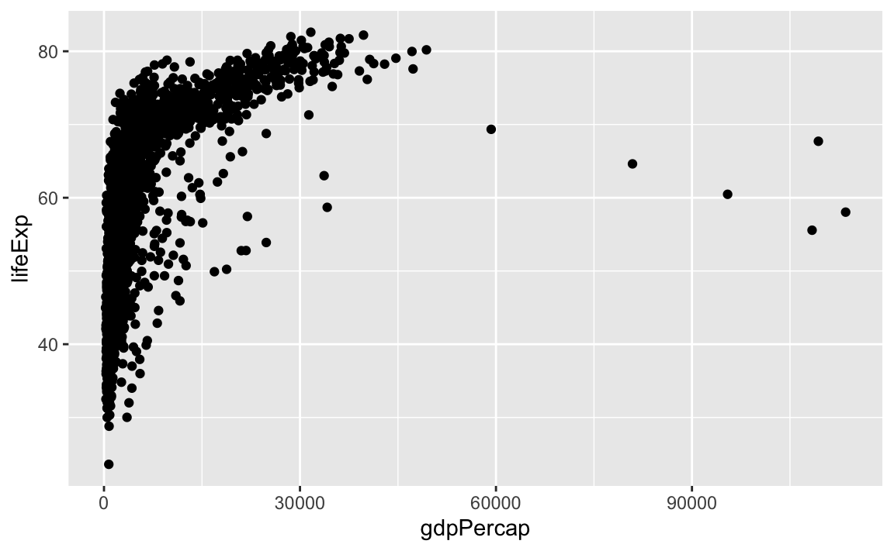
So the first thing we do is call the ggplot function. This function lets R know that we are creating a new plot, and any of the arguments we give the ggplot function are the global options for the plot: They apply to all layers on the plot.
We have passed in two arguments to ggplot. First, we told ggplot what data we wanted to show on our figure -- in this example, the gapminder data we read in earlier.
For the second argument, we passed in the aes function, which tells ggplot how variables in the data map to aesthetic properties of the figure -- in this case, the x and y locations. Here we told ggplot we wanted to plot the lifeExp column of the gapminder dataframe on the x-axis, and the gdpPercap column on the y-axis.
Notice that we did not need to explicitly pass aes these columns (e.g., x = gapminder$lifeExp). This is because ggplot is smart enough to know to look in the data for that column!
By itself, the call to ggplot is not enough to draw a figure:
ggplot(data = gap, aes(x = gdpPercap, y = lifeExp))We need to tell ggplot how we want to visually represent the data, which we do by adding a new geom layer. In our example, we used geom_point, which tells ggplot we want to visually represent the relationship between x and y as a scatterplot of points:
ggplot(data = gap, aes(x = gdpPercap, y = lifeExp)) +
geom_point()
# Same as
# my_plot <- ggplot(data = gap, aes(x = gdpPercap, y = lifeExp))
# my_plot + geom_point()
Challenge 1.
Modify the example so that the figure visualizes how life expectancy has changed over time.
Hint: The gapminder dataset has a column called year, which should appear on the x-axis.
12.3.2 Anatomy of aes
In the previous examples and challenge, we have used the aes function to tell the scatterplot geom about the x and y locations of each point. Another aesthetic property we can modify is the point color.
ggplot(data = gap, aes(x = gdpPercap, y = lifeExp, color=continent)) +
geom_point()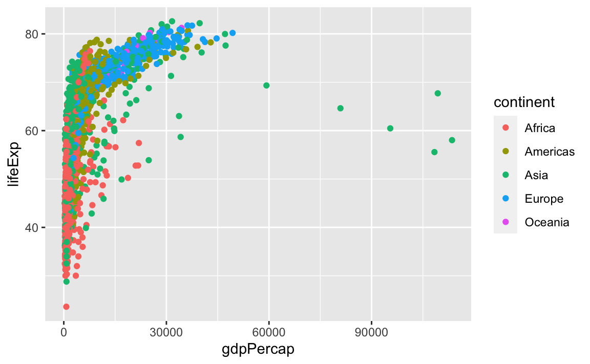
Normally, specifying options like color="red" or size=10 for a given layer results in its contents being red and quite large. Inside the aes() function, however, these arguments are given entire variables whose values will then be displayed using different realizations of that aesthetic.
Color is not the only aesthetic argument we can set to display variation in the data. We can also vary by shape, size, etc.
ggplot(data=, aes(x=, y=, by =, color=, linetype=, shape=, size=))12.3.3 Layers
In the previous challenge, you plotted lifExp over time. Using a scatterplot probably is not the best for visualizing change over time. Instead, lets tell ggplot to visualize the data as a line plot:
ggplot(data = gap, aes(x=year, y=lifeExp, by=country, color=continent)) +
geom_line()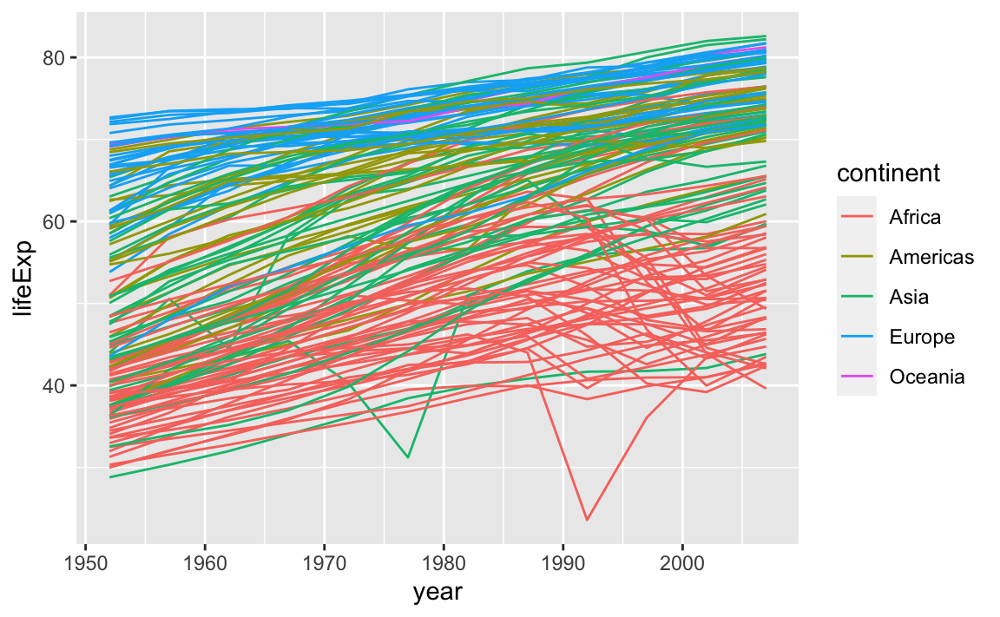
Instead of adding a geom_point layer, we have added a geom_line layer. We have also added the **by** aesthetic, which tells ggplot to draw a line for each country.
But what if we want to visualize both lines and points on the plot? We can simply add another layer to the plot:
ggplot(data = gap, aes(x=year, y=lifeExp, by=country, color=continent)) +
geom_line() +
geom_point()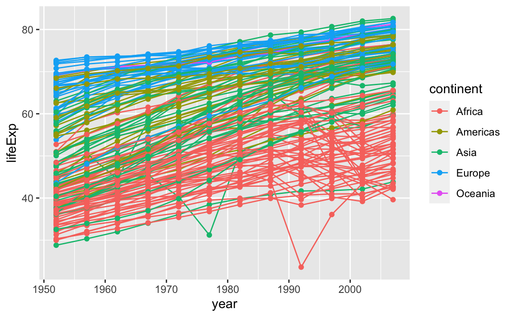
It is important to note that each layer is drawn on top of the previous layer. In this example, the points have been drawn on top of the lines. Here is a demonstration:
ggplot(data = gap, aes(x=year, y=lifeExp, by=country)) +
geom_line(aes(color=continent)) +
geom_point()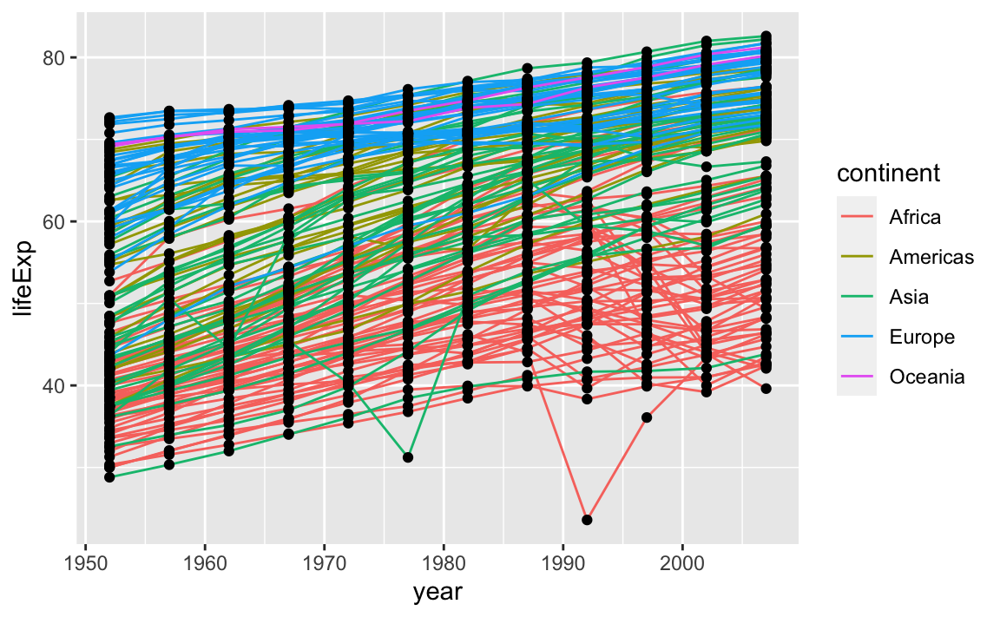
In this example, the aesthetic mapping of color has been moved from the global plot options in ggplot to the geom_line layer, so it no longer applies to the points. Now we can clearly see that the points are drawn on top of the lines.
Challenge 2.
Switch the order of the point and line layers from the previous example. What happened?
12.3.4 Labels
Labels are considered to be their own layers in ggplot.
# Add x- and y-axis labels
ggplot(data = gap, aes(x = gdpPercap, y = lifeExp, color=continent)) +
geom_point() +
xlab("GDP per capita") +
ylab("Life Expectancy") +
ggtitle("My fancy graph")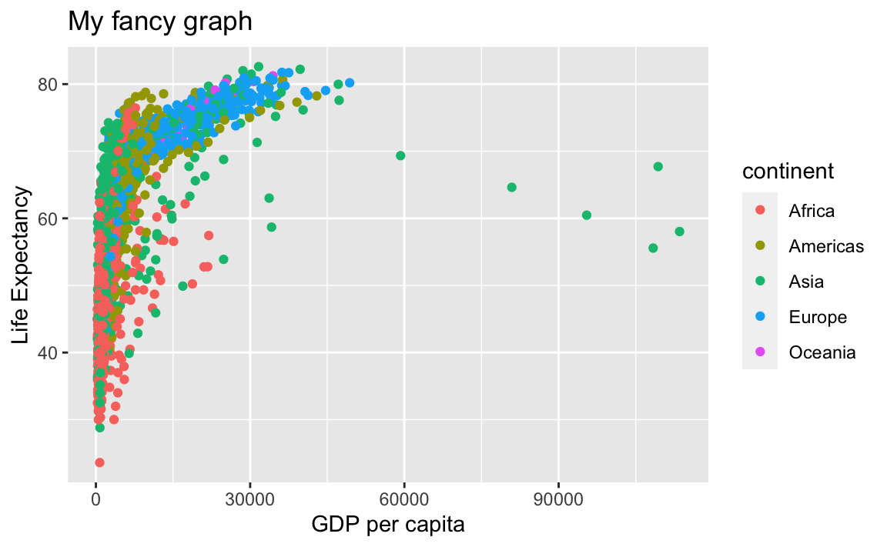
So are scales:
# Limit x-axis from 1,000 to 20,000
ggplot(data = gap, aes(x = gdpPercap, y = lifeExp, color=continent)) +
geom_point() +
xlab("GDP per capita") +
ylab("Life Expectancy") +
ggtitle("My fancy graph") +
xlim(1000, 20000)
#> Warning: Removed 515 rows containing missing values (geom_point).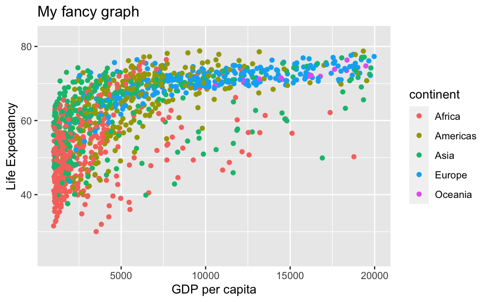
12.3.5 Transformations and Stats
ggplot also makes it easy to overlay statistical models over the data. To demonstrate, we will go back to an earlier example:
ggplot(data = gap, aes(x = gdpPercap, y = lifeExp, color=continent)) +
geom_point()
We can change the scale of units on the x-axis using the scale functions, which control the mapping between the data values and visual values of an aesthetic.
ggplot(data = gap, aes(x = gdpPercap, y = lifeExp, color=continent)) +
geom_point() +
scale_x_log10()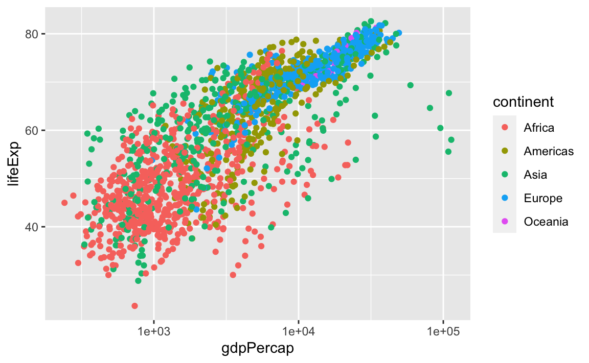
The log10 function applied a transformation to the values of the gdpPercap column before rendering them on the plot, so that each multiple of 10 now only corresponds to an increase in 1 on the transformed scale, e.g., a GDP per capita of 1,000 is now 3 on the y-axis, a value of 10,000 corresponds to 4 on the x-axis, and so on. This makes it easier to visualize the spread of data on the x-axis.
We can fit a simple relationship to the data by adding another layer, geom_smooth:
ggplot(data = gap, aes(x = gdpPercap, y = lifeExp, color=continent)) +
geom_point() +
scale_x_log10() +
geom_smooth(method="lm")
#> `geom_smooth()` using formula 'y ~ x'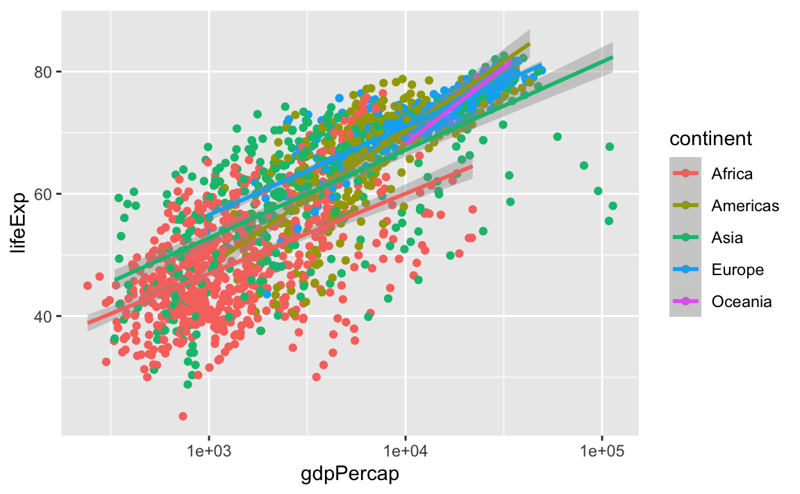
Note that we have 5 lines, one for each region, because of the color option in the global aes function. But if we move it, we get different results:
ggplot(data = gap, aes(x = gdpPercap, y = lifeExp)) +
geom_point(aes(color=continent)) +
scale_x_log10() +
geom_smooth(method="lm")
#> `geom_smooth()` using formula 'y ~ x'So, there are two ways an aesthetic can be specified. Here, we set the color aesthetic by passing it as an argument to geom_point. Previously in the lesson, we used the aes function to define a mapping between data variables and their visual representation.
We can make the line thicker by setting the size aesthetic in the geom_smooth layer:
ggplot(data = gap, aes(x = gdpPercap, y = lifeExp)) +
geom_point(aes(color=continent)) +
scale_x_log10() +
geom_smooth(method="lm", size = 1.5)
#> `geom_smooth()` using formula 'y ~ x'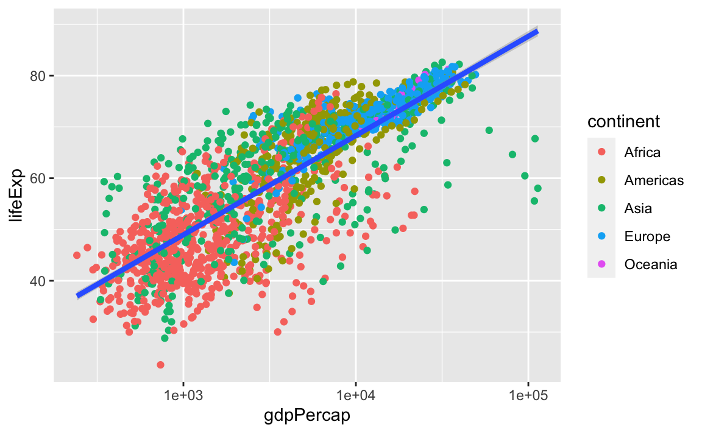
Challenge 3.
Modify the color and size of the points on the point layer in the previous example so that they are fixed (i.e., not reflective of continent).
Hint: Do not use the aes function.
12.3.6 Facets
Earlier, we visualized the change in life expectancy over time across all countries in one plot. Alternatively, we can split this out over multiple panels by adding a layer of facet panels:
ggplot(data = gap, aes(x = year, y = lifeExp)) +
geom_point() +
facet_wrap( ~ continent)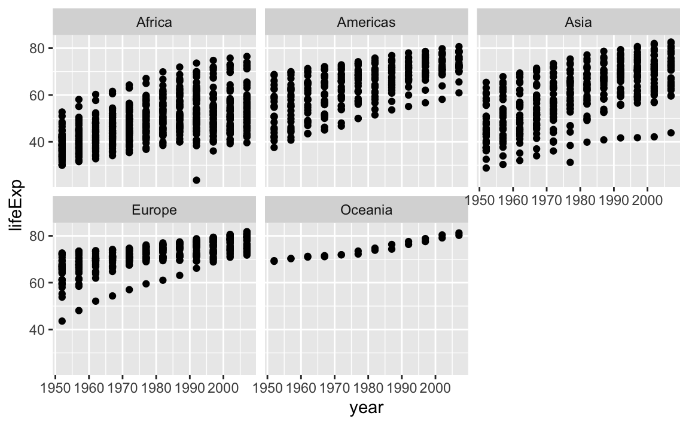
12.3.7 Legend and Scale Manipulations
When creating plots with ggplot, you will notice that legends are sometimes automatically produced. Additionally, you will often need to transform the axis scales, similar to the modifcations we made with the base plots.
We can easily set axis limits with xlim and ylim layers, or with the limits argument withing scale_x_log10:
ggplot(data = gap, aes(x = gdpPercap, y = lifeExp)) +
geom_point() +
scale_x_log10(limits = c(100, 100000)) +
ylim(0, 100)
#> Warning: Removed 3 rows containing missing values (geom_point).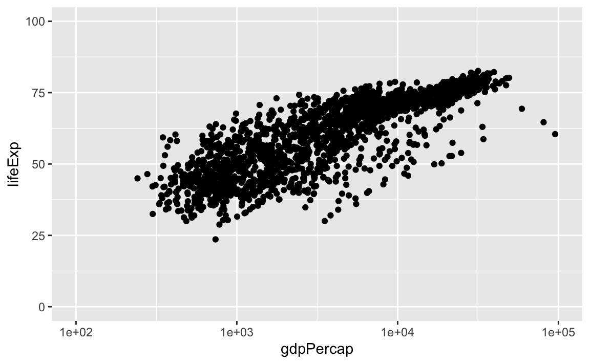
There are many other axis features we can change. For example, we can change the angle of an axis text with theme or reverse the direction of an axis with scale_x_reverse or scale_y_reverse. Stack Overflow is a great resource for a variety of axis transformations.
library(scales)
#>
#> Attaching package: 'scales'
#> The following object is masked from 'package:purrr':
#>
#> discard
#> The following object is masked from 'package:readr':
#>
#> col_factor
ggplot(data = gap, aes(x = gdpPercap, y = lifeExp)) +
geom_point() +
theme(axis.text.x = element_text(angle=45)) +
scale_x_reverse()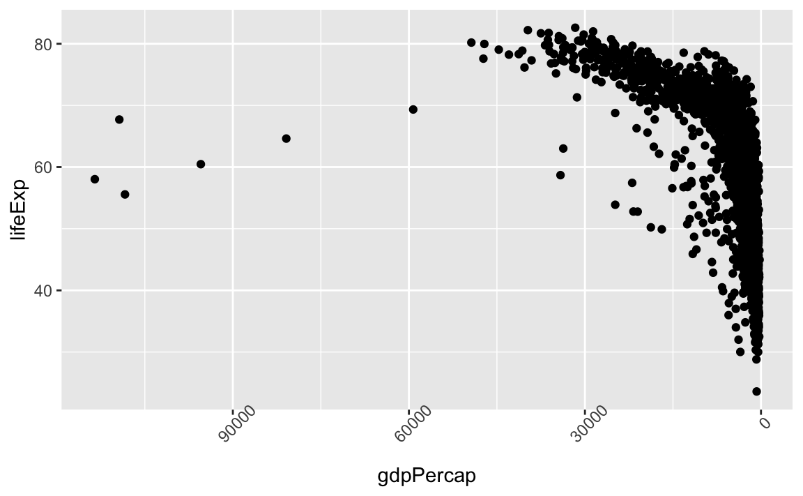
Legend manipulations can be a little trickier. Let's consider a plot where we group our observations by continent:
legend_plot <- ggplot(data = gap, aes(x = log(gdpPercap), y = lifeExp, color=continent)) +
geom_point() +
scale_x_log10()
legend_plot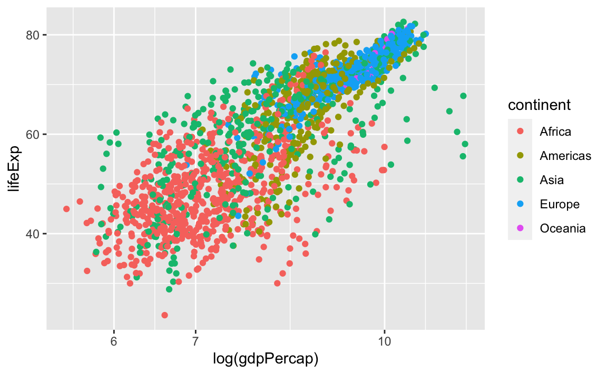
First, let's change the legend position:
legend_plot +
theme(legend.position="bottom")
legend_plot +
theme(legend.position="top")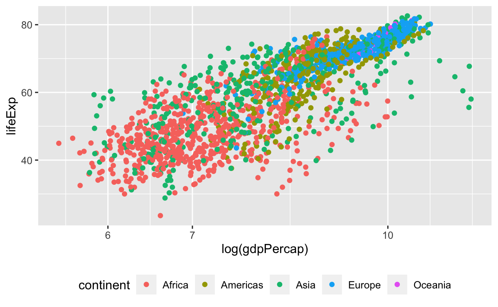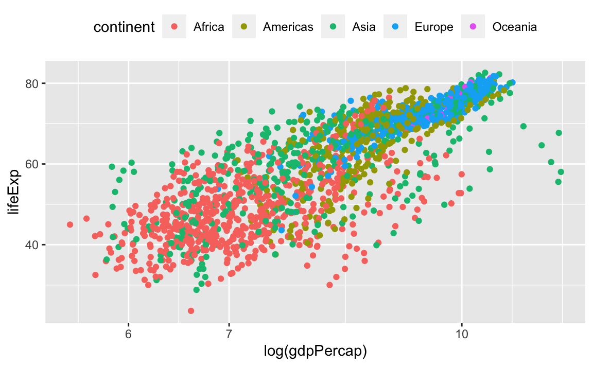
We can also remove the title of the legend for self-explanatory groupings:
legend_plot +
theme(legend.title = element_blank())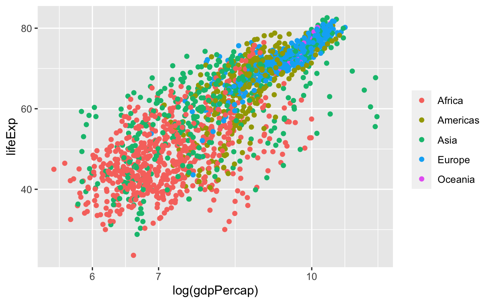
We can reverse the order of the groups with the guides layer. Here, we specify that we want to reverse color, because that was the original aesthetic that we specified to create the groupings and the legend:
legend_plot +
guides(color = guide_legend(reverse = TRUE))Finally, we can also change the legend title by modifying the label for color:
legend_plot +
labs(color = "My New Title")And we can change the legend labels and colors. Again, we are using scale_color_manual because we originally specified the groups with the **color** aesthetic:
legend_plot +
scale_color_manual(labels = c("Af", "Am", "As", "Eu", "Oc"),
values = c("red", "darkblue", "seagreen", "purple", "#5ab4ac"))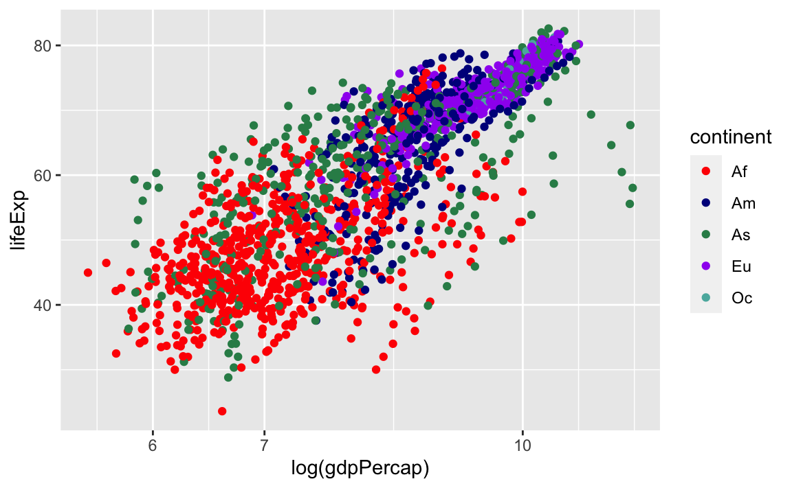
12.3.8 Putting Everything Together
Here are some other common geom layers:
Bar Plots
# Count of lifeExp bins
ggplot(data = gap, aes(x = lifeExp)) +
geom_bar(stat="bin")
#> `stat_bin()` using `bins = 30`. Pick better value with `binwidth`.
# With color representing regions
ggplot(data = gap, aes(x = lifeExp, fill = continent)) +
geom_bar(stat="bin")
#> `stat_bin()` using `bins = 30`. Pick better value with `binwidth`.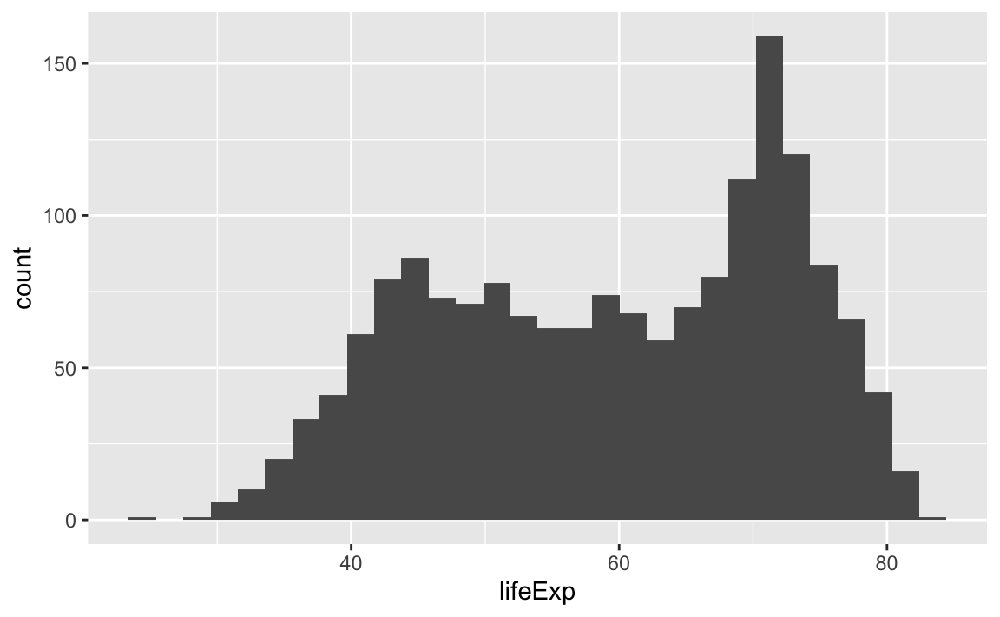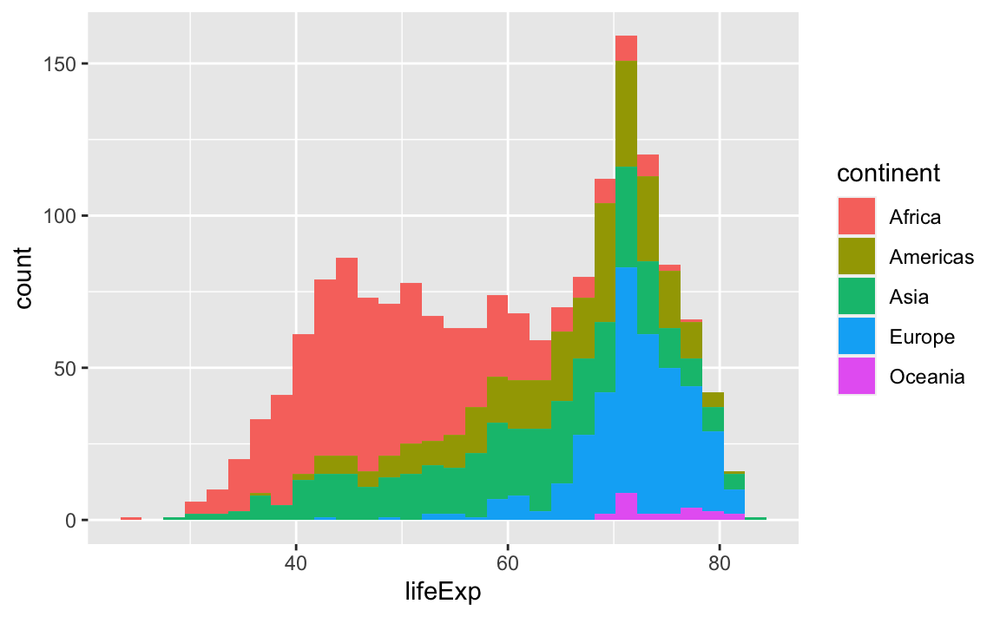
Box Plots
ggplot(data = gap, aes(x = continent, y = lifeExp)) +
geom_boxplot()
This is just a taste of what you can do with ggplot2.
RStudio provides a really useful cheat sheet of the different layers available, and more extensive documentation is available on the ggplot2 website.
Finally, if you have no idea how to change something, a quick Google search will usually send you to a relevant question and answer on Stack Overflow with reusable code to modify!
Challenge 4.
Create a density plot of GDP per capita, filled by continent.
Advanced:
- Transform the x-axis to better visualize the data spread.
- Add a facet layer to panel the density plots by year.
12.4 Saving Plots
There are two basic image types:
- Raster/Bitmap (.png, .jpeg)
Every pixel of a plot contains its own separate coding; not so great if you want to resize the image.
jpeg(filename="example.png", width=, height=)
plot(x,y)
dev.off()- Vector (.pdf, .ps)
Every element of a plot is encoded with a function that gives its coding conditional on several factors; this is great for resizing.
pdf(filename="example.pdf", width=, height=)
plot(x,y)
dev.off()Exporting with ggplot
# Assume we saved our plot as an object called example.plot
ggsave(filename="example.pdf", plot=example.plot, scale=, width=, height=)